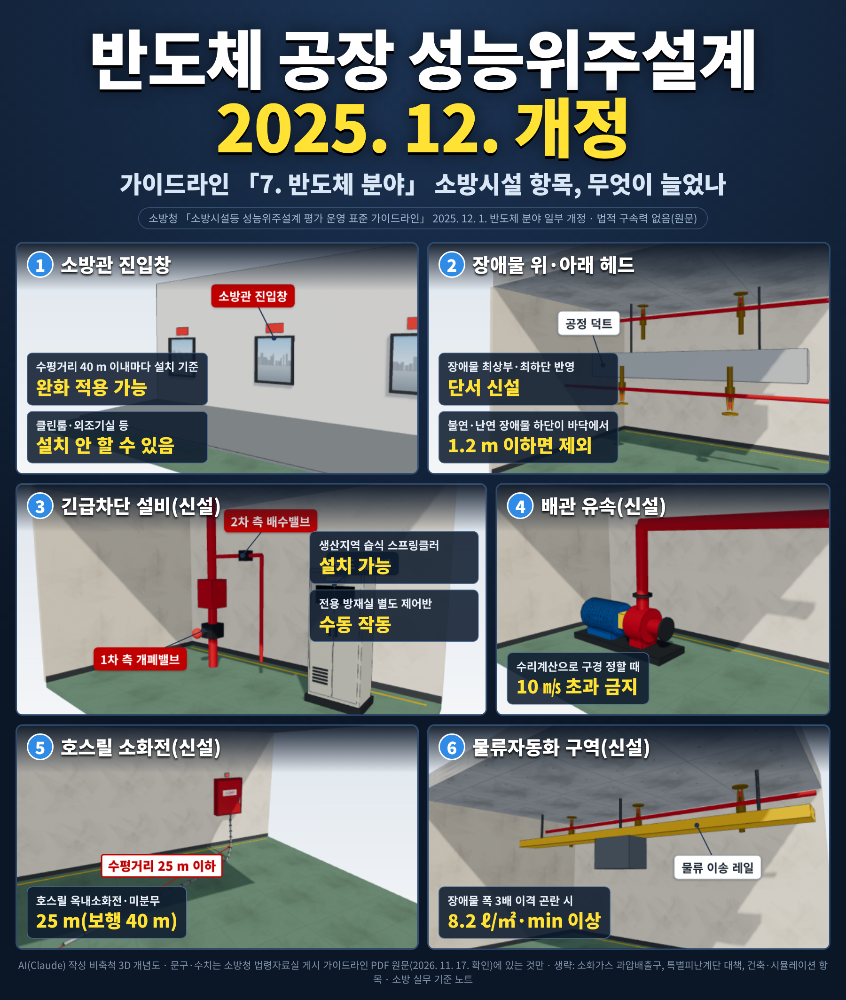
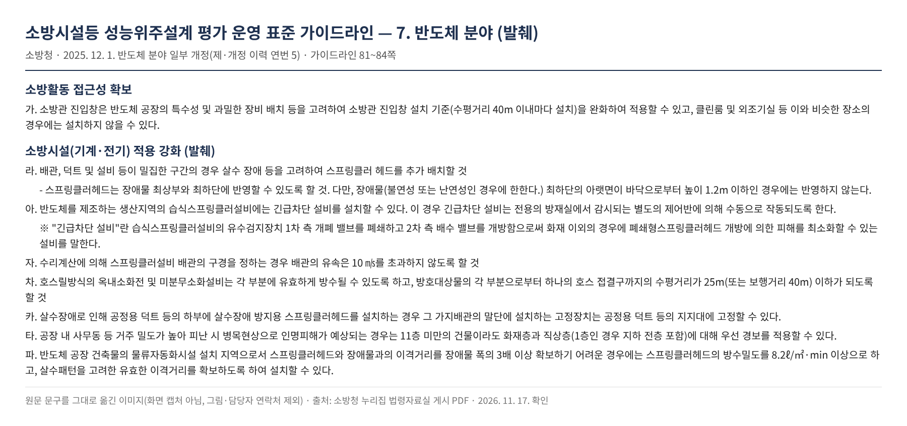
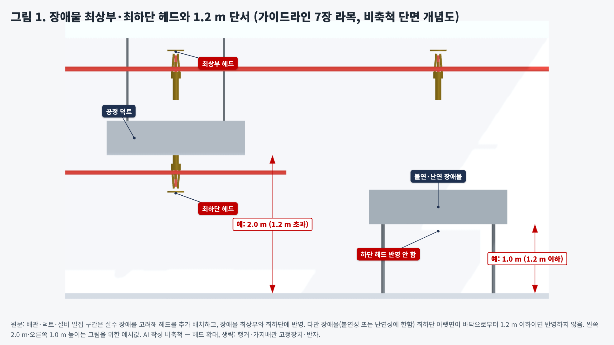

반도체 공장 성능위주설계, 2025. 12. 개정으로 무엇이 늘었나요? — 가이드라인 「반도체 분야」 변경점 정리
왜? 반도체 공장은 클린룸·덕트 밀집·물류 레일 때문에 일반 기준을 그대로 맞추기 어려운 곳이 많아, 성능위주설계 평가 때 무엇을 완화하고 무엇을 강화할지 평가단 공통 잣대를 적어 둔 것입니다.

1. 지침 요약
| 항목 | 내용 |
|---|---|
| 발신 | 소방청 화재예방국 소방분석제도과 (소방청 누리집 법령자료실 게시) |
| 자료명 | 「소방시설등 성능위주설계 평가 운영 표준 가이드라인」 (발간등록번호 11-1661000-000077-01, 표지 발행 2025. 12.) |
| 개정 일자 | 2025. 12. 1. — 가이드라인 제·개정 이력 연번 5 "반도체 분야 일부 개정" |
| 게시 | 2025. 11. 12. 법령자료실 「251201 반도체분야 일부개정 사항이 반영된 성능위주설계 가이드라인 입니다.」 (첨부 PDF 115쪽) |
| 문서번호 | 게시글·첨부 PDF에 시행 공문 문서번호는 없습니다(확인하지 못했다). |
| 효력 | 원문: "본 가이드라인은 성능위주설계의 전문성과 공정성을 담보하기 위한 참고 용도이며, 법적 구속력은 없습니다." |
2. 원문 보기

3. 핵심 내용 — 2025. 5. 1. 판과 무엇이 다른가
같은 게시판의 직전 판(2025. 5. 1. 개정, 113쪽)과 이번 판(115쪽)의 PDF 텍스트를 쪽별로 대조했습니다. 표지·이력·목차와 7장 반도체 분야만 다르고, 1~6장·8장 도로터널·9장 질의회신 사례는 글머리 기호 외 문구가 같았습니다.
| 항목 | 2025. 5. 1. 판 | 2025. 12. 1. 판 |
|---|---|---|
| 진입창 가. | 이격거리 기준을 완화 적용하되, 진입창 부분 활동공간(6㎡ 이상) 내부 마감재료(단열재 포함) 불연재료, 실내 출입문까지 접근 동선 확보 | 설치 기준(수평거리 40m 이내마다 설치)을 완화하여 적용할 수 있고, 클린룸 및 외조기실 등 이와 비슷한 장소는 설치하지 않을 수 있다 (6㎡ 활동공간 문구 없음) |
| 소화설비 나. | Main FAB과 오피스 지역에 호스릴소화전 권장 | 클린룸과 오피스 지역에 호스릴소화전 권장 |
| 라. 단서 | 헤드는 장애물 최상부와 최하단에 반영 | 같음 + 다만, 장애물(불연성·난연성에 한함) 최하단 아랫면이 바닥으로부터 1.2m 이하이면 반영하지 않는다 |
| 아. (신설) | — | 생산지역 습식스프링클러설비에 긴급차단 설비 설치 가능 — 전용 방재실에서 감시되는 별도 제어반으로 수동 작동. 긴급차단 설비 = 유수검지장치 1차 측 개폐밸브 폐쇄 + 2차 측 배수밸브 개방으로 화재 이외의 헤드 개방 피해 최소화 |
| 자. (신설) | — | 수리계산으로 배관 구경을 정하는 경우 배관 유속 10 ㎧ 초과 금지 |
| 차. (신설) | — | 호스릴방식 옥내소화전·미분무소화설비: 하나의 호스 접결구까지 수평거리 25m(또는 보행거리 40m) 이하 |
| 카. (신설) | — | 공정용 덕트 하부 살수장애 방지용 헤드의 가지배관 말단 고정장치는 덕트 등의 지지대에 고정 가능 |
| 타. (신설) | — | 사무동 등 병목 우려 시 11층 미만이라도 화재층과 직상층(1층이면 지하 전층 포함) 우선경보 적용 가능 |
| 파. (신설) | — | 물류자동화시설 지역에서 장애물 폭 3배 이상 이격 곤란 시 방수밀도 8.2ℓ/㎡·min 이상 + 살수패턴을 고려한 유효 이격거리 |
| 건축 나. | 비상용승강기가 설치되는 건축물은 층수와 관계없이 특별피난계단 적용 | 「건축법 시행령」 제35조제1항에도 불구하고 특별피난계단으로 설치. 다만, 클린룸 내부 직통계단은 그렇지 않다 |
| 건축 다. (신설) | — | 설비배관 전용 구획 부분에 소화설비를 설치하고 다른 부분과 방화구획하면 「건축법 시행령」 제46조 방화구획 기준을 적용하지 않거나 완화 가능 |
그대로인 항목: 반자 내부 등 헤드 제외 부분의 화재안전성 평가(가.), FAB 스프링클러 위험물 취급소 수준 방사밀도·살수면적(다.), 소화가스 과압배출구(마.), 소방용 급수배관 2개소 이상 인입 또는 루프(바.), 클린룸 내 특별피난계단 대책(사.), 헬리포트(건축 가.), 화재·피난시뮬레이션 2개 항목.
그림으로 보기 — 라목 단서

AI(Claude)로 그린 비축척 단면 개념도입니다. 2.0 m·1.0 m는 그림용 예시값이고, 원문 수치는 1.2 m 하나입니다. 1.2 m를 장애물 "최하단의 아랫면"부터 바닥까지 잰다는 것은 원문 문구 그대로입니다. 행거·가지배관 고정장치·반자는 생략했습니다.
4. 현행 법령·기준 반영 여부
가이드라인 자체: 소방청 법령자료실 목록(2026. 11. 17. 확인)에 이 판 이후의 성능위주설계 가이드라인 개정 게시는 없습니다. 가이드라인이 인용한 성능위주설계 대상 범위는 현행 「소방시설법 시행령」 제9조(대통령령 제36728호, 2026. 10. 2. 시행) 제1~8호 문구와 같습니다.
화재안전기술기준 반영: 현행 NFTC 103(국립소방연구원공고 제2026-35호) 본문에는 "반도체", "클린룸", "긴급차단" 문구가 없습니다. 즉 이번 반도체 항목은 NFTC 조문으로 들어간 것이 아니라 성능위주설계 평가 때 쓰는 가이드라인 수준입니다. 관련 일반 조문과 비교하면 다음과 같습니다(원문 비교, 해석은 "(의견)"으로 구분).
| 가이드라인 항목 | 현행 일반 기준(국가법령정보센터) | 비교 |
|---|---|---|
| 자. 유속 10 ㎧ | NFTC 103 2.5.3.3 단서: 수리계산에 따르는 경우 가지배관의 유속은 6 ㎧, 그 밖의 배관의 유속은 10 ㎧를 초과할 수 없다. | (의견) 가이드라인은 "배관의 유속"만 써서 가지배관 6 ㎧ 제한을 대체하는지 원문으로는 알 수 없습니다. NFTC의 6 ㎧를 함께 지키는 쪽이 안전합니다. |
| 차. 호스릴 25 m | NFTC 102 2.4.2.1: 각 부분으로부터 하나의 방수구까지 수평거리 25 m(호스릴옥내소화전설비를 포함한다) 이하 | 수평거리 25 m는 같고, 가이드라인은 "(또는 보행거리 40m)"를 덧붙였습니다. |
| 타. 우선경보 | NFTC 203 2.5.1.2: 층수 11층(공동주택 16층) 이상 — 2층 이상 발화 시 발화층 및 그 직상 4개 층 등 | 가이드라인은 11층 미만 건물에도 "화재층과 직상층(1층이면 지하 전층)" 우선경보를 적용할 수 있게 했습니다. |
| 파. 장애물 3배 | NFTC 103 2.7.7.3 단서: 헤드와 장애물 이격거리를 장애물 폭의 3배 이상 확보한 경우 장애물 아래 설치 의무 제외 | 3배를 확보하기 어려운 물류자동화 구역에 한해 방수밀도 8.2 ℓ/㎡·min 이상으로 보완하는 길을 둔 것입니다. |
카목(덕트 지지대에 가지배관 말단 고정장치 고정)은 내진 쪽 기준과 관련된 항목이라 이 글에서는 원문 소개만 하고 따로 해설하지 않습니다. 「건축법 시행령」 제35조·제46조 현행 문구는 이번에 대조하지 않았습니다(확인하지 못했다).
5. 현장 체크
| 단계 | 확인할 것 |
|---|---|
| 설계(성능위주설계) | 반도체 공장 PBD 보고서가 2025. 12. 1. 판 7장을 기준으로 했는지 확인. 진입창 완화·미설치 구간(클린룸·외조기실 등) 근거, 장애물 최상부·최하단 헤드 배치와 1.2 m 단서 적용 구간(불연·난연 여부) 표시, 물류자동화 구역 8.2 ℓ/㎡·min 적용 범위 명시 |
| 수리계산 | 배관 유속 10 ㎧ 이하 + NFTC 103 가지배관 6 ㎧ 이하 동시 확인 |
| 시공 | 긴급차단 설비를 둔다면 유수검지장치 1차 측 개폐밸브·2차 측 배수밸브와 전용 방재실 별도 제어반(수동 작동) 계통 일치 확인. 덕트 하부 헤드 가지배관 말단 고정 위치 확인 |
| 감리 | 평가단 심의 결과(완화·강화 조건)가 시공도와 같은지 대조. 호스릴 접결구 수평거리 25 m·보행거리 40 m 작도 확인 |
| 유지관리·점검 | 긴급차단 설비 작동 후 원상 복구(1차 측 개방·2차 측 배수 폐쇄) 절차와 감시 상태 확인. 설비 반입·레이아웃 변경으로 장애물·물류 레일이 바뀌면 헤드 배치 재검토 |
6. 출처
· 소방청 법령자료실 — 251201 반도체분야 일부개정 사항이 반영된 성능위주설계 가이드라인(2025. 11. 12. 게시, 첨부 PDF)
· 직전 판 — 성능위주설계 평가 운영 표준 가이드라인 개정(2025. 5. 1. 게시)
· 국가법령정보센터: 소방시설법 시행령 제9조, NFTC 103, NFTC 102, NFTC 203 (2026. 11. 17. 확인)
· 같이 보기: 보와 가장 가까운 헤드 — NFTC 103 2.7.8, 헤드 설치 제외 장소 — NFTC 103 2.12